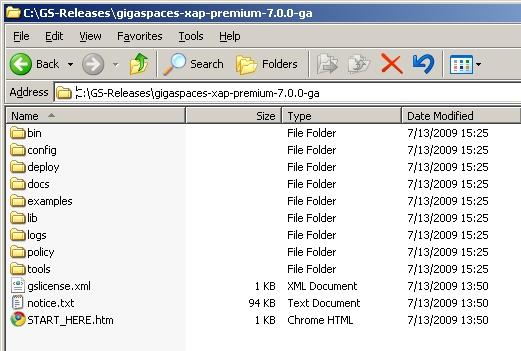

Section Summary: Requirements and how to install GigaSpaces with Windows, Linux or Unix.
Overview
GigaSpaces is 100% pure Java, and therefore can run on any UNIX or Windows machine that supports Java.
Prior to Installation
Prior to the GigaSpaces installation, make sure:
- JDK 1.5 or 1.6 is installed (see note below):
- The JAVA_HOME environment variable points to the correct JDK (not JRE) directory before running GigaSpaces. For example, D:\Java\jdk1.6.0_23.
- The JAVA_HOME environment variable should be added to the beginning of the Path environment variable. For example, %JAVA_HOME%\bin;SystemRoot%\system32;%SystemRoot%;%SystemRoot%
- Optional: Your network and machines running GigaSpaces are configured to have multicast enabled. See the Multicast Configuration section for details on how to enable multicast.
- You have reviewed the Supported Platforms section.
Installation
Installing on Windows
- Unzip the ZIP file (using your favorite unzip tool, for example, WinZip) to the location of your choice. Unzipping the file creates a <GigaSpaces Root> directory with several sub-directories. An example for the name of the ZIP file:
- XAP (eXtreme Application Platform) – gigaspaces-xap-premium-7.1.0-ga-b4300
- XAP (eXtreme Application Platform) – gigaspaces-xap-premium-7.1.0-ga-b4300
- After unzipping the ZIP file, you should have the following files and folders under the <GigaSpaces Root> folder:

 What's Next?
What's Next?
- To verify a local installation, a remote installation, and the cluster configuration, refer to the Testing System Environment section.
- See the Quick Start Guide for your first steps with GigaSpaces.
Installing on Linux
- Go to the directory into which you want to install, e.g. opt, and issue the unzip following command, supplying the path to the name of the ZIP file – gigaspaces-edition-versionNumber_version/milestone_build.zip. For example:
- XAP (eXtreme Application Platform) – unzip gigaspaces-xap-premium-7.1.0-ga-b4300.zip
- Make sure all sh file(s) in the /bin and the /examples directory are in executable mode, meaning you can run them from your machine. To check this, use the ls -all command for the relevant directory, and make sure that x is included in the file permissions.
 What's Next?
What's Next?
- To verify a local installation, a remote installation, and the cluster configuration, refer to the Testing System Environment section.
- See the Quick Start Guide for your first steps with GigaSpaces.
Mixing Versions
Mixing GigaSpaces versions/builds
 Supported:
Supported:
Applications built using GigaSpaces 6.6 (these run without any code changes on a clean 7.0.0 installation).
 Not supported:
Not supported:
Mixing clients/servers from different GigaSpaces releases/builds – 6.6.x clients can not run against 7.1.x servers. 7.1.x clients can not run against 6.6.x servers.
Mixing Different GigaSpaces JARs in Same Deployment Environment
 GigaSpaces components (space, cluster of spaces, Processing Unit, GSM, GSC, LUS, Mahalo, GUI, CLI) can run only with the same GigaSpaces JARs (i.e., the same version and same build number).
GigaSpaces components (space, cluster of spaces, Processing Unit, GSM, GSC, LUS, Mahalo, GUI, CLI) can run only with the same GigaSpaces JARs (i.e., the same version and same build number).
Important Tips
Use JDK and not JRE
It is recommended to use a JDK (Java Development Kit), and not a JRE (Java Runtime Environment), which can be used for runtime only and not for development. However, if you do decide to use a JRE, make sure the JAVA_HOME environment variable points to the correct JRE directory.
You should also remove specific JDK command-line arguments, like -server, which do not exist in JRE.
Performance Tips
Before you begin working with GigaSpaces, it is recommended to review the Performance Tuning and Considerations sections and apply some of the required changes. For example, you must update the max file descriptors limit before you begin.
| The recommendation is to review at least the following sections: |